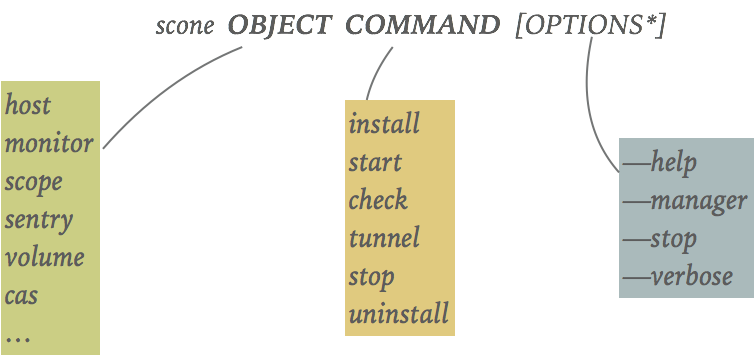

SCONE CLI
We maintain a single unified command line interface (CLI) scone that helps to to start and stop secure containers as well as secure applications. scone also provides functionality to install and monitor SCONE hosts.
The scone command is structured similar as the docker CLI or the infinit CLI:

One needs to specify an object (like host) and a command (like install) and some options. For some commands, some of the options are actually not optional but mandatory.
See below how to install scone on Ubuntu. Instead of installing scone in a VM or a host, you could just start it in a container. Assuming that you have docker installed, you try the following examples by running the following container:
> docker run -it sconecuratedimages/sconecli
Note
The scone CLI uses ssh to log into remote hosts. We assume that ssh is setup in such a way that you do not need passwords to log into these hosts. Please read section ssh setup to learn how to ensure this.
Help
scone has a built in help. To get a list of all objects, just type:
$ scone --help
To get a list of all commands for a given object (like host), execute:
$ scone host --help
To get a list of all options for a given object and command (e.g., host install) and some examples, just execute:
$ scone host install --help
bash auto-completion
If you are using bash as your shell, scone supports auto-completion. This means that instead you can use the TAB key to see the options. For example,
$ scone <TAB>
will show all available objects. If you have already specified an object, auto-completion helps you to list all commands:
$ scone host <TAB>
If you also specified an command, it will provide you with a list of options (that you have not specified yet):
$ scone host install <TAB>
Of course, it also supports auto-completion:
$ scone host install -n<TAB>
will result in
$ scone host install -name
Installation of scone
On Ubuntu platform, you can just execute
> curl -L https://sconecontainers.github.io/install.sh | bash
You could alternatively first download the above installation script and store it as file install.sh, inspect it and then run it ./install.sh".
The scone command is located in directory /opt/scone/bin/. You might want this directory to add this to you PATH
> PATH=/opt/scone/bin/:$PATH
For convenience, you might want to add above statement to your .bashrc script (- in case you are using bash).
Manual installation of SCONE Deb Package
You can execute the following commands (these are the same as in the above installation script):
KEYNAME="96B9BADB"
REPO="deb https://sconecontainers.github.io/SCONE ./"
sudo apt-get update
sudo apt-get install -y linux-image-extra-$(uname -r) linux-image-extra-virtual
sudo sudo apt-get install -y apt-transport-https ca-certificates
sudo apt-key adv \
--keyserver hkp://ha.pool.sks-keyservers.net:80 \
--recv-keys $KEYNAME
echo $REPO | sudo tee /etc/apt/sources.list.d/scone.list
sudo apt-get clean
sudo apt-get update
apt-cache policy scone
sudo apt-get install -y scone
The scone utility will be installed at /opt/scone/bin. Hence, it makes sense to add this path to your PATH:
> export PATH=/opt/scone/bin:$PATH
You can then execute some scone commands to see if the installation was successful:
> scone --version
> scone --help
> scone volume --help
Screencast

© scontain.com, November 2017. Questions or Suggestions?